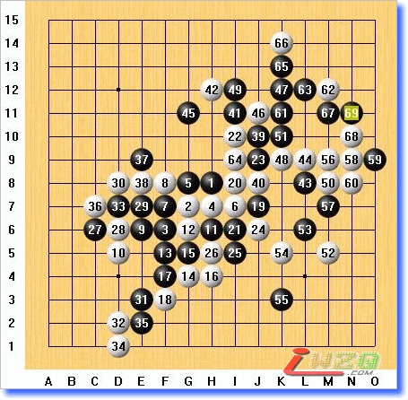
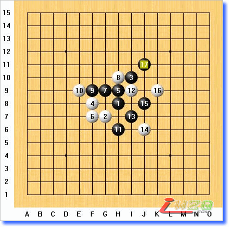

可以确定笃定肯定认定一定一件事情，的确是在天津待了六天。
虽然说，比赛是3号到6号。
国庆期间的车票超难买，只买到站票。
拿到票的时候，我在想，要不要和月婶说，不去了。
这个念头很快就给我打消了。
不去？呵呵，非给月婶剁了不可。
说起来的话，真是十多年没坐过火车了。
去的几天前，月婶问，开车去天津还来得及不，她没一个人去那么远的地方过。
当时就告她，ME2。
好容易上车，人挤得快没人形了，中国人口真多。
等补了卧铺以后，车都快到蚌埠了。
坐硬卧车厢里，挨个发信息：
别了，南京，记得想我啊。
Google是个伟大的网站。
来之前，在上面搜索了N天。
于是，当悠扬得知我是坐公交到青年宫，而不是打车的时候，相当惊讶。
要没查清楚，死活不出南京。
用和树说的话，死南京好歹有人给我收尸，死天津哪个收啊。
貌似上次浙江赛也说过类似的话。
10月2日上午到的青年宫。
开房的时候，遇到点麻烦，说是非要自由组队才行。一个房间两个人，非要等有两个人的时候才能开。
当时，第一反应，找我徒弟一起住。
接着，遇到个技术上的问题：啊叻，我没他手机号码。
原因：成天上网，在网上遇到，要手机干嘛？
要手机找他呗！
坐大厅等半天，遇到了个看上去和我年龄相仿的。
开好房间以后，他问我年龄，报了以后，他说，那我喊你哥吧。
事后，他说，当时我听了那话以后，脖子都直了。
顺道说下，他是90后的。
当时就感慨，人啊，老了啊。
这话在后面的比赛里不断重复着。
下午提个相机跑出去，到处找银行取款。
晃悠半天没找到，结果，回宾馆的时候发现了伟大的银行一条街。
就在宾馆对面。
悠扬晚上下班跑到宾馆。
强烈鄙视下下。
来之前说身材走样了。
看到真人……
这丫的真虚伪。
他自己说，走样的肚子给遮住了。
已经很久没有早上早起了。
同屋的家伙说，上学的话，没有5点就要起了。
不禁要想当年，也是那时候起的。
唉，到底老了，还要想当年了。
平时差不多都2点多睡，早上起不来。
早上一睁眼，还真是不习惯。
开幕式的时候，主办方请来了华以刚。
说起来，我还是他的粉丝。
居然忘要签名了。
要了也没地方签……
第一盘，对的是谭鑫麟。
登记的时候无限感慨，小时候学写字，写自己的名字一定没少吃过苦头。
赛后才知道，湖南这次来的棋手，大部分都是死守的，而且开的多是疏星。
早知道这样，就不开疏了。
毕竟是陌生的对手，不了解情况，没敢开其它。
或者说，下疏下顺手了。
说个这次比赛超经典的好了。
我还在那开局，一扭头，见梅凡和谢磊那桌空了。
心里一个咯噔，浙江赛上就知道米兰骗多，不知道谢磊中了他什么诡计。
比完跑过去，问他用的什么骗把人秒了。
米兰来了句，他给人秒了。
当时以为他开玩笑。
连问了几次，才确定给秒了。
之后，才知道，米兰下瑞，6手团角团错了，结果投了。
擦汗，不知道说嘛了。
这盘是第一盘，算是和和美美。
和了。
下了70多手。
在白14的时候，他陷入长考。
我以为他会发动攻击，
在F7展开，毕竟，还有8手的借用。
又看过去，隐约在下面，白也有攻击。
算得眼晕呢，他拍下了14手，看得我郁闷了半晌，始终没看明白怎么回事，什么意思。
最后，只能说，他是担心我11，13的活二和9手在左边弄出点什么来。
能弄出什么来啊？
不清楚他看到什么。
只清楚一点，他绝对是死守的类型。
15手，扣住6，8，10的眠三。
17手形成个马步。
18手扣的地方正确，要不我是打算在那折腾的。
不过，等我19彻底防死下面白的可能变化以后，确定一个问题：这盘棋挂是挂不了了。
最后的和，也是理所当然的了。
局后，他说，你控盘，我没机会，你是不是等我失误。
当时就想吐血。
疏星本来就很僵，不控盘怎么办。
组长有轮遇到谭鑫麟，问我他棋路如何。
我说，他是个死守的。
事后，组长也说，他死守到了变态的地步，有攻都不攻。
结果，组长犯了个错，给杀了。
看来，他自己是等待别人失误啊。
下午第二盘。
对手是浙江赛上的樊星岑。
应该说是认识，但是，不知道到底怎么样。
他先手开瑞星。
当时我枯了一半。
我最痛恨大蒜和瑞星了。
瑞星的变化极为繁杂，浙江赛的时候，米兰和大鱼成天拆瑞星各种骗。看得我在一边想哭。
附带说下，同屋的家伙喜欢瑞星。
可惜，奇臭无比。
12手下挪一行就是最流行的瑞星大定式，可以转到和局的变化里面。
当然，黑也有其它变化。
想换个试试。
中午的时候，潇
对上张埕之前，很多人都告诉我，他很厉害。
实际上，他也的确很厉害。
开局名月，让我大吃一惊，没有想到会有人在比赛里开名月。
向来认为自己对名月很了解，黑绝对优势。
自然交换了。
保留二打点，一打点简直就是秒杀。
这个6相当让我感到意外。
一度想下在I6，想和3手形成一个跳三。
当然，还要花一手。
可是，白怎么看都可以抢先开攻。
想半天，还是老实点吧。
老实了一手，9手没有老实成。
一个劲老是想着，白一旦失先了以后，黑怎么做棋，这个9往下一立，形状绝对黑优，也想过白在右边可能的攻击，感觉上并不可怕。
直到14手一亮，疯掉了。
怎么看白都是N多抓。
思来想去，也就这个15能够防住抓的同时，勉强能够防住白的V。
白接着在18单团。
19手已经可以说是强弩之末了。
白18已经可以说是N杀，而不是单杀。
以下白胜。
后来，他说，9手挡白中间，白一点办法都没有，而且，局面也绝对黑优。
看来，对名月这个开局认识还是不够啊。
徐亮亮这盘实在是一个让人感到后怕的对局。
我先手开了长星，以为他会走白斜着活二的4的变化，黑控盘，慢慢做。
没有想到他转到了疏星里面。
9手冲5，7这个变化本来是不用的。
浙江赛上都是直接走在11的位置。
结果，死得很凄惨。
回家翻棋谱才知道，啊叻，这个才略微黑优。
可惜，翻棋谱也就去之前一两天，没有展开来。
结果一点感觉都没有。
始终担心，白10手贴上去，和8手联络在一起，很麻烦的样子。
16手我一直以为会挡住眠三，那位置着实让我吃惊。
再一看，白也就是和下面一个活而能够链接。
先冲四破坏了再说。
然后，白黑右边的眠三似乎有联络，也盖住了。
徐亮亮大概是担心黑的冲四，也跟着交换。
右边胶着。
左边我始终觉得欠手，见右边无碍以后，在左边开始防守。
28，30都在意料之中，我以为先从了31以后，黑就可以杀了，正好解禁。
没有想到，白做了个长连，一下子黑右边不得不通过一系列交换，勉强把局面保持住了平衡。
黑39开始动右边的脑子。
白42把黑左右分割开来。
43如果下44的位置，可能黑还好点。
一拍下去，突然发现，黑不行了。
悔啊，后悔啊。
到44的时候，局面相当僵持，已经不怎么想下了，想要提和。
估计是见黑攻完了，自己什么都没动，马上提和自然不爽。
徐亮亮说，再攻攻，再攻攻。
接下来的52手让我大惊失色。
白一下子在右下确立了优势，黑什么都没有，不得不跟过去防守，而且，满眼都是白色恐怖。
52让我失色，54让我崩溃。
局面一下子压倒性地白好。
局后拿黑石算到这里，其实，黑可以杀的。
唉，老实防守反而没有办法。
人啊，不能太善良。
由于白下面始终还有再花一手棋才能杀，所以，黑只要确保上面攻击的时候一口气V到底就可以杀了。
问题是，的确可以V到底。
还有个问题，当时没看到。
主要还是人太老实了，光想着防守了。
算了半天，发现白上面藏个四三，意味着K那条竖线是个眠三，于是可以和52在斜线上链接在一起。
于是，这个55，试图阻挡斜线，而且自己可以做个眠三。
当时还沾沾自喜，以为是唯一防。
结果，给黑石彻底征服。
居然这么简单就给抓了。
真是命大。
估计是他准备的杀点正好给我防住了，白的信心遭受严重打击。

60四三做杀。
61手利用边路，做了个VCF。
62试图保持先手。
看了半晌，实在是没VCF，只好希冀通过交换，然后在下面防一手，好歹别挂。
等到我69拍下去，等着白70挡中间，71在下面防守，力求和棋的时候，他顿住了。
他要不顿住，想都不想拍下去，我也想都不想在下面防住。
既然他顿住了，说明有棋。
于是，他想，我也想。
不想不要紧，一想居然发现黑在上面藏了几套杀。
白也不得不投了。
上次浙江赛，赛点是在汽车站旁边不到200米。
就是说，比赛期间，我就在宾馆附近200米内活动。
唯一一次出去吃宵夜也没超过200米。
最后天，连西湖都没去就回南京了。
等到上汽车，那叫一个郁闷，连西湖都没去啊……
这次天津怎么样也要多出去逛悠逛悠。
继续背着相机蹿。
首先，找KFC。
之前是找农行找不到，然后不找了，一个个往外冒。
这次也是，找KFC找不到，找个麦当劳，可修路，围起来关门了。
好容易找到家，吃完以后发现对面是狗不理。
据说，还有家麻花叫“猴不吃”。
唉，嘛名字啊……
狗不理的包子，不想说什么了。
我家楼下的包子一块钱仨。
这盘和杜卫鹏下的疏星是这次最没质量的对局。
虽然旁边的盛宏安说，看上去你很认真。
要知道，下午要比赛两轮，一轮12点到15点。一轮15点30到18点30.
我这个夜猫子中午不打盹不行。
从这个毫无抵抗的19就可以看出状态很糟糕了，只想快点回去睡觉。
结果，跟着感觉走，乱拍拍最后，发现给抓了。
而那个抓之前顺序对的话可以避免的。
话说回来，如果知道下盘是对陈新，这盘绝对会拼的。
我真不想碰到陈新啊。
陈新，是个让我觉得害怕的家伙。
因为我知道他是风尘。
疏星有个变化，就叫风尘流。
浙江赛上，他第三，早就知道他厉害，所以，可以说是抱着必死之心去下的。
可是，没有想到，他给我开名月。
继续交换。
自己对自己说，怎么样也不能两次死名月这个开局上吧。
4这个变化没在意过，其实不应该被白活二迷惑住，黑自己开杀就可以了。
比赛的时候走的这个5效果并不好。
而在6手团角的时候，7手跟着团角，花了很长时间，以为是个不错的一手。
结果，发现……速败。
本来以为无论白怎么攻都可以反，结果给白简单抓了。
不过，那是后来开石头看的。
对局之中，不知道风尘怎么没下。

等到他防守的时候，名月3手桂马位置的好处马上体现了出来。
到17手，黑杀。
本来说，晚上再出去逛逛。
出门发现下雨了，虽然很小，但是没伞。
从家出去的时候，回了两趟，到底还是没带伞。
结果有KTV，没去。
据说九指亮了一嗓子，全场疯了。
世界人民震惊了。
九指这次最夸张，签名的时候直问，人家分高你找人签就算了，怎么找我？
其实，九指水平不错，就是运气背了点。
前三轮接连遇到高手。
三轮下来鸭蛋。
几分垫底。
好容易遇到个小孩给他开浦月，可惜是他徒弟，压根没法换。
只好考了个浦月定，送了小孩1分。
快笑翻了。
运气，果然是实力的一部分啊。
最后天比赛很多人都没心思比了。
李非和戴晓涵更是干脆开个瑞星，接着，三手就提和了。
对手是何军。
想来都好笑，最后两盘，一盘名月，一盘恒星，都是黑大优的。
这盘记谱的时候出了点问题，由于我三手记错方向，导致最后我在棋盘上拿起棋子冲四活三的时候，在记谱纸上发现，啊叻，怎么少一格。
这才发现，记错了。
于是，一边喊着老了老了，一边开杀了……
这个4在三手我也喜欢下的。
一打5手，20手左右黑就杀了。
二打以后，到10手，我看白老是踩八卦点，索性开始破了。
虽然说，黑始终占优，但是，杀还没看出来，只好一边控盘，一边找机会。
到26，白切断黑左右两边，但是，黑在右边存在攻击，到41，黑杀。
赛后，何军说，他就没看到那三。
看来，最后盘他也不在状态。
 好常的文章...慢慢看...自个顶下先...
好常的文章...慢慢看...自个顶下先...